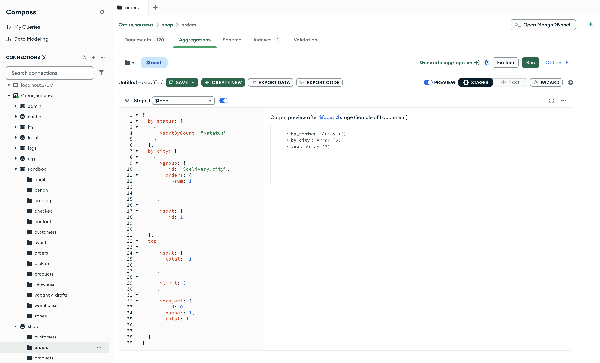

Справочник по MongoDB · модуль 4 · конвейер агрегации
4.8
$bucket, $bucketAuto
и $facet
В этой главе разобраны три стадии. $bucket раскладывает документы по диапазонам значений, границы которых задаются заранее. $bucketAuto выбирает границы сам так, чтобы в диапазонах было поровну документов. $facet выполняет несколько конвейеров над одним и тем же потоком и собирает их результаты в один документ — так за один запрос строится сводка из нескольких отчётов.
- Категория
- Агрегация
- Уровень
- Начальный
- Связанные темы
- $group и аккумуляторы (глава 4.4), $count и $sortByCount (глава 4.5), $push (глава 4.7), $match, $sort, $limit (глава 4.1)
- Зачем это знать
- Делить документы на ценовые и другие диапазоны и получать несколько отчётов по коллекции одним запросом
Как запускать примеры этой главы
mongodb-glava-4.8-python.zip, 64 КБmongodb-glava-4.8-ruby.zip, 63 КБmongodb-glava-4.8-go.zip, 70 КБmongodb-glava-4.8-cpp.zip, 70 КБ — все примеры главы готовыми программами, базы и стенд в Docker. В README.md — запуск в Docker, если Compass нет или он не подключается, и на установленном сервере с Compass, а также что должна напечатать каждая программа.lessons/ch4_8.py — пример вставляется в конец файлаlessons/ch4_8.rb — пример вставляется в конец файлаlessons/ch4_8.go — пример внутрь скобок в конце main, функции и типы — выше mainlessons/ch4_8.cpp — пример внутрь скобок в конце main, функции — выше maincd lessons, затем python ch4_8.pycd lessons, затем python3 ch4_8.py · в Docker: docker compose run --rm python lessons/ch4_8.pycd lessons, затем ruby ch4_8.rb · в Docker: docker compose run --rm ruby lessons/ch4_8.rbcd lessons, затем go run ch4_8.go · в Docker: docker compose run --rm go lessons/ch4_8.gocd lessons, затем g++ -std=c++17 ch4_8.cpp -o prog $(pkg-config --cflags --libs libmongocxx1) && ./prog · в Docker: docker compose run --rm cpp lessons/ch4_8.cpp§1Стадия $bucket
На почте посылки раскладывают по весу: до 1 кг, от 1 до 5 кг, от 5 до 10 кг. Каждая посылка попадает на одну полку, и по полкам видно, каких посылок больше. Граница полки известна заранее, её выбирает почта.
Стадия $bucket раскладывает документы по корзинам — диапазонам значений выражения. Параметр groupBy — выражение, по которому раскладываются документы, например "$total". Параметр boundaries — границы корзин по возрастанию. Каждая корзина берёт значения от своей границы включительно до следующей, не включая её. Из каждой корзины стадия выпускает один документ: _id — нижняя граница, count — число документов.
Пример раскладывает 120 заказов по сумме: до 10 000, от 10 000 до 50 000, до 100 000, до 200 000 и до 500 000.
У стадии $bucket в mongocxx::pipeline есть свой метод — bucket.
pipeline = [
{"$bucket": {
"groupBy": "$total",
"boundaries": [0, 10000, 50000, 100000, 200000, 500000],
}},
]
for doc in orders.aggregate(pipeline):
print(doc)
mongocxx::pipeline pipeline; pipeline.bucket(make_document( kvp("groupBy", "$total"), kvp("boundaries", make_array(0, 10000, 50000, 100000, 200000, 500000)))); for (auto&& doc : orders.aggregate(pipeline)) { std::cout << bsoncxx::to_json(doc, bsoncxx::ExtendedJsonMode::k_relaxed) << std::endl; }
pipeline := mongo.Pipeline{
{{Key: "$bucket", Value: bson.D{
{Key: "groupBy", Value: "$total"},
{Key: "boundaries", Value: bson.A{0, 10000, 50000, 100000, 200000, 500000}}}}},
}
cursor, _ := orders.Aggregate(ctx, pipeline)
for cursor.Next(ctx) {
var doc bson.D
cursor.Decode(&doc)
out, _ := bson.MarshalExtJSON(doc, false, false)
fmt.Println(string(out))
}
pipeline = [
{ "$bucket" => {
"groupBy" => "$total",
"boundaries" => [0, 10000, 50000, 100000, 200000, 500000],
} },
]
orders.aggregate(pipeline).each { |doc| puts doc.inspect }
{'_id': 0, 'count': 14}
{'_id': 10000, 'count': 23}
{'_id': 50000, 'count': 24}
{'_id': 100000, 'count': 29}
{'_id': 200000, 'count': 30}
{ "_id" : 0, "count" : 14 }
{ "_id" : 10000, "count" : 23 }
{ "_id" : 50000, "count" : 24 }
{ "_id" : 100000, "count" : 29 }
{ "_id" : 200000, "count" : 30 }
{"_id":0,"count":14}
{"_id":10000,"count":23}
{"_id":50000,"count":24}
{"_id":100000,"count":29}
{"_id":200000,"count":30}
{"_id"=>0, "count"=>14}
{"_id"=>10000, "count"=>23}
{"_id"=>50000, "count"=>24}
{"_id"=>100000, "count"=>29}
{"_id"=>200000, "count"=>30}
Стадия выпустила пять документов, по одному на корзину. На схеме — какие суммы попали в каждую корзину.
| _id корзины | Суммы в корзине | Заказов |
|---|---|---|
| 0 | от 0 до 9 999 | 14 |
| 10000 | от 10 000 до 49 999 | 23 |
| 50000 | от 50 000 до 99 999 | 24 |
| 100000 | от 100 000 до 199 999 | 29 |
| 200000 | от 200 000 до 499 999 | 30 |
| всего | шесть границ — пять корзин | 120 |
Последняя граница, 500 000, нижней границей корзины не становится: она закрывает последнюю корзину. Самый дорогой заказ — 457 930, поэтому все заказы попали в корзины.
По умолчанию в документе корзины одно поле с числом — count. Другие числа задаются так же, как в $group.
§2Поля корзины: output
$bucket — это группировка, в которой ключ группы — диапазон. Поэтому поля корзины задаются аккумуляторами из главы 4.4 в параметре output. Если output есть, поля count в результате нет: каждое поле перечисляется явно.
Пример считает в каждой корзине заказы и выручку.
pipeline = [
{"$bucket": {
"groupBy": "$total",
"boundaries": [0, 10000, 50000, 100000, 200000, 500000],
"output": {"orders": {"$sum": 1}, "revenue": {"$sum": "$total"}},
}},
]
for doc in orders.aggregate(pipeline):
print(doc)
mongocxx::pipeline pipeline; pipeline.bucket(make_document( kvp("groupBy", "$total"), kvp("boundaries", make_array(0, 10000, 50000, 100000, 200000, 500000)), kvp("output", make_document( kvp("orders", make_document(kvp("$sum", 1))), kvp("revenue", make_document(kvp("$sum", "$total"))))))); for (auto&& doc : orders.aggregate(pipeline)) { std::cout << bsoncxx::to_json(doc, bsoncxx::ExtendedJsonMode::k_relaxed) << std::endl; }
pipeline := mongo.Pipeline{
{{Key: "$bucket", Value: bson.D{
{Key: "groupBy", Value: "$total"},
{Key: "boundaries", Value: bson.A{0, 10000, 50000, 100000, 200000, 500000}},
{Key: "output", Value: bson.D{
{Key: "orders", Value: bson.D{{Key: "$sum", Value: 1}}},
{Key: "revenue", Value: bson.D{{Key: "$sum", Value: "$total"}}}}}}}},
}
cursor, _ := orders.Aggregate(ctx, pipeline)
for cursor.Next(ctx) {
var doc bson.D
cursor.Decode(&doc)
out, _ := bson.MarshalExtJSON(doc, false, false)
fmt.Println(string(out))
}
pipeline = [
{ "$bucket" => {
"groupBy" => "$total",
"boundaries" => [0, 10000, 50000, 100000, 200000, 500000],
"output" => { "orders" => { "$sum" => 1 }, "revenue" => { "$sum" => "$total" } },
} },
]
orders.aggregate(pipeline).each { |doc| puts doc.inspect }
{'_id': 0, 'orders': 14, 'revenue': 82890}
{'_id': 10000, 'orders': 23, 'revenue': 656280}
{'_id': 50000, 'orders': 24, 'revenue': 1732110}
{'_id': 100000, 'orders': 29, 'revenue': 4298090}
{'_id': 200000, 'orders': 30, 'revenue': 8616940}
{ "_id" : 0, "orders" : 14, "revenue" : 82890 }
{ "_id" : 10000, "orders" : 23, "revenue" : 656280 }
{ "_id" : 50000, "orders" : 24, "revenue" : 1732110 }
{ "_id" : 100000, "orders" : 29, "revenue" : 4298090 }
{ "_id" : 200000, "orders" : 30, "revenue" : 8616940 }
{"_id":0,"orders":14,"revenue":82890}
{"_id":10000,"orders":23,"revenue":656280}
{"_id":50000,"orders":24,"revenue":1732110}
{"_id":100000,"orders":29,"revenue":4298090}
{"_id":200000,"orders":30,"revenue":8616940}
{"_id"=>0, "orders"=>14, "revenue"=>82890}
{"_id"=>10000, "orders"=>23, "revenue"=>656280}
{"_id"=>50000, "orders"=>24, "revenue"=>1732110}
{"_id"=>100000, "orders"=>29, "revenue"=>4298090}
{"_id"=>200000, "orders"=>30, "revenue"=>8616940}
Заказов от 200 000 — 30 из 120, четверть. Выручки они дают 8 616 940 из 15 386 310, больше половины. На схеме выручка корзин показана полосами в одном масштабе.
Число заказов в корзинах растёт медленно, от 14 до 30, а выручка — в сто раз: в дорогих корзинах каждый заказ крупнее.
Все суммы попали в корзины, потому что последняя граница больше самого дорогого заказа. Если граница меньше, часть документов останется без корзины.
§3Значения вне границ: default
Если на почте нет полки для посылок тяжелее 10 кг, такую посылку некуда положить. Для неё заводят полку «остальное». У $bucket такая полка задаётся параметром default: его значение становится _id корзины для всех документов вне границ.
Пример выполняет конвейер с границами до 200 000 дважды: без default и с ним.
from pymongo.errors import OperationFailure no_default = [ {"$bucket": {"groupBy": "$total", "boundaries": [0, 10000, 50000, 100000, 200000]}}, ] with_default = [ {"$bucket": { "groupBy": "$total", "boundaries": [0, 10000, 50000, 100000, 200000], "default": "200000 и больше", }}, ] print("── без default") try: for doc in orders.aggregate(no_default): print(doc) except OperationFailure as e: print("код", e.code) print(e.details["errmsg"]) print("── с default") for doc in orders.aggregate(with_default): print(doc)
mongocxx::pipeline no_default; no_default.bucket(make_document( kvp("groupBy", "$total"), kvp("boundaries", make_array(0, 10000, 50000, 100000, 200000)))); mongocxx::pipeline with_default; with_default.bucket(make_document( kvp("groupBy", "$total"), kvp("boundaries", make_array(0, 10000, 50000, 100000, 200000)), kvp("default", "200000 и больше"))); std::cout << "── без default" << std::endl; try { for (auto&& doc : orders.aggregate(no_default)) { std::cout << bsoncxx::to_json(doc) << std::endl; } } catch (const mongocxx::operation_exception& e) { std::cout << "код " << e.code().value() << std::endl; std::cout << e.what() << std::endl; } std::cout << "── с default" << std::endl; for (auto&& doc : orders.aggregate(with_default)) { std::cout << bsoncxx::to_json(doc, bsoncxx::ExtendedJsonMode::k_relaxed) << std::endl; }
noDefault := mongo.Pipeline{
{{Key: "$bucket", Value: bson.D{
{Key: "groupBy", Value: "$total"},
{Key: "boundaries", Value: bson.A{0, 10000, 50000, 100000, 200000}}}}},
}
withDefault := mongo.Pipeline{
{{Key: "$bucket", Value: bson.D{
{Key: "groupBy", Value: "$total"},
{Key: "boundaries", Value: bson.A{0, 10000, 50000, 100000, 200000}},
{Key: "default", Value: "200000 и больше"}}}},
}
fmt.Println("── без default")
_, err := orders.Aggregate(ctx, noDefault)
var ce mongo.CommandError
if errors.As(err, &ce) {
fmt.Println("код", ce.Code)
fmt.Println(ce.Message)
}
fmt.Println("── с default")
cursor, _ := orders.Aggregate(ctx, withDefault)
for cursor.Next(ctx) {
var doc bson.D
cursor.Decode(&doc)
out, _ := bson.MarshalExtJSON(doc, false, false)
fmt.Println(string(out))
}
no_default = [
{ "$bucket" => {
"groupBy" => "$total",
"boundaries" => [0, 10000, 50000, 100000, 200000],
} },
]
with_default = [
{ "$bucket" => {
"groupBy" => "$total",
"boundaries" => [0, 10000, 50000, 100000, 200000],
"default" => "200000 и больше",
} },
]
puts "── без default"
begin
orders.aggregate(no_default).each { |doc| puts doc.inspect }
rescue Mongo::Error::OperationFailure => e
puts "код #{e.code}"
puts e.document["errmsg"]
end
puts "── с default"
orders.aggregate(with_default).each { |doc| puts doc.inspect }
── без default
код 40066
PlanExecutor error during aggregation :: caused by :: $switch could not find a matching branch for an input, and no default was specified.
── с default
{'_id': 0, 'count': 14}
{'_id': 10000, 'count': 23}
{'_id': 50000, 'count': 24}
{'_id': 100000, 'count': 29}
{'_id': '200000 и больше', 'count': 30}
── без default
код 40066
PlanExecutor error during aggregation :: caused by :: $switch could not find a matching branch for an input, and no default was specified.: server error code 40066: generic server error
── с default
{ "_id" : 0, "count" : 14 }
{ "_id" : 10000, "count" : 23 }
{ "_id" : 50000, "count" : 24 }
{ "_id" : 100000, "count" : 29 }
{ "_id" : "200000 и больше", "count" : 30 }
── без default
код 40066
PlanExecutor error during aggregation :: caused by :: $switch could not find a matching branch for an input, and no default was specified.
── с default
{"_id":0,"count":14}
{"_id":10000,"count":23}
{"_id":50000,"count":24}
{"_id":100000,"count":29}
{"_id":"200000 и больше","count":30}
── без default
код 40066
PlanExecutor error during aggregation :: caused by :: $switch could not find a matching branch for an input, and no default was specified.
── с default
{"_id"=>0, "count"=>14}
{"_id"=>10000, "count"=>23}
{"_id"=>50000, "count"=>24}
{"_id"=>100000, "count"=>29}
{"_id"=>"200000 и больше", "count"=>30}
Без default сервер завершил запрос ошибкой 40066. Текст ошибки говорит о выражении $switch: стадия $bucket выполняется через него, и для 30 заказов от 200 000 подходящей ветки нет. С default эти 30 заказов попали в корзину «200000 и больше».
| Корзина | Без default | С default |
|---|---|---|
| 0 … 100000 | 14 + 23 + 24 + 29 = 90 | 90 |
| суммы от 200 000 | нет корзины — ошибка 40066 | «200000 и больше»: 30 |
Ошибка возникает при выполнении, на первом документе вне границ. На других данных тот же конвейер может отработать без ошибки.
Границы $bucket выбирает человек. Если неизвестно, как распределены значения, границы удобнее поручить серверу.
§4Стадия $bucketAuto
Чтобы разделить класс на четыре равные команды по росту, учеников выстраивают по росту и делят строй на четыре части. Границы между командами получаются сами: рост последнего ученика каждой части.
Стадия $bucketAuto делает так же. Параметр buckets — сколько корзин нужно. Сервер упорядочивает документы по groupBy и выбирает границы так, чтобы в корзинах было примерно поровну документов. _id корзины — документ с полями min и max: нижняя граница и верхняя.
pipeline = [
{"$bucketAuto": {"groupBy": "$total", "buckets": 4}},
]
for doc in orders.aggregate(pipeline):
print(doc)
mongocxx::pipeline pipeline; pipeline.bucket_auto(make_document(kvp("groupBy", "$total"), kvp("buckets", 4))); for (auto&& doc : orders.aggregate(pipeline)) { std::cout << bsoncxx::to_json(doc, bsoncxx::ExtendedJsonMode::k_relaxed) << std::endl; }
pipeline := mongo.Pipeline{
{{Key: "$bucketAuto", Value: bson.D{
{Key: "groupBy", Value: "$total"},
{Key: "buckets", Value: 4}}}},
}
cursor, _ := orders.Aggregate(ctx, pipeline)
for cursor.Next(ctx) {
var doc bson.D
cursor.Decode(&doc)
out, _ := bson.MarshalExtJSON(doc, false, false)
fmt.Println(string(out))
}
pipeline = [
{ "$bucketAuto" => { "groupBy" => "$total", "buckets" => 4 } },
]
orders.aggregate(pipeline).each { |doc| puts doc.inspect }
{'_id': {'min': 2370, 'max': 38990}, 'count': 30}
{'_id': {'min': 38990, 'max': 99750}, 'count': 30}
{'_id': {'min': 99750, 'max': 205150}, 'count': 30}
{'_id': {'min': 205150, 'max': 457930}, 'count': 30}
{ "_id" : { "min" : 2370, "max" : 38990 }, "count" : 30 }
{ "_id" : { "min" : 38990, "max" : 99750 }, "count" : 30 }
{ "_id" : { "min" : 99750, "max" : 205150 }, "count" : 30 }
{ "_id" : { "min" : 205150, "max" : 457930 }, "count" : 30 }
{"_id":{"min":2370,"max":38990},"count":30}
{"_id":{"min":38990,"max":99750},"count":30}
{"_id":{"min":99750,"max":205150},"count":30}
{"_id":{"min":205150,"max":457930},"count":30}
{"_id"=>{"min"=>2370, "max"=>38990}, "count"=>30}
{"_id"=>{"min"=>38990, "max"=>99750}, "count"=>30}
{"_id"=>{"min"=>99750, "max"=>205150}, "count"=>30}
{"_id"=>{"min"=>205150, "max"=>457930}, "count"=>30}
Четыре корзины по 30 заказов. Граница max каждой корзины равна min следующей и в корзину не входит. Исключение — последняя корзина: её max 457 930 — самая большая сумма, и этот заказ в ней. На схеме — корзины $bucket и $bucketAuto на одной шкале сумм.
Ширина участка — диапазон сумм, число — заказов в нём. У $bucket ширина задана, а число разное. У $bucketAuto число одинаковое, а ширина разная: дешёвых заказов много на узком участке, дорогих мало на широком. Пустые участки — суммы до 2370 и от 457 930 до 500 000, заказов там нет.
Границы $bucketAuto — точные суммы заказов: 38 990, 99 750, 205 150. В отчёте их удобнее читать круглыми.
§5Округлённые границы: granularity
Ценники в магазине ставят на полки «до 1 000», «до 2 000», «до 5 000»: такие числа легко запомнить. Параметр granularity стадии $bucketAuto округляет границы до чисел из заданного ряда. Ряд "1-2-5" — это 1, 2, 5, 10, 20, 50 и так далее, каждый раз в десять раз больше.
pipeline = [
{"$bucketAuto": {"groupBy": "$total", "buckets": 4, "granularity": "1-2-5"}},
]
for doc in orders.aggregate(pipeline):
print(doc)
mongocxx::pipeline pipeline; pipeline.bucket_auto(make_document( kvp("groupBy", "$total"), kvp("buckets", 4), kvp("granularity", "1-2-5"))); for (auto&& doc : orders.aggregate(pipeline)) { std::cout << bsoncxx::to_json(doc, bsoncxx::ExtendedJsonMode::k_relaxed) << std::endl; }
pipeline := mongo.Pipeline{
{{Key: "$bucketAuto", Value: bson.D{
{Key: "groupBy", Value: "$total"},
{Key: "buckets", Value: 4},
{Key: "granularity", Value: "1-2-5"}}}},
}
cursor, _ := orders.Aggregate(ctx, pipeline)
for cursor.Next(ctx) {
var doc bson.D
cursor.Decode(&doc)
out, _ := bson.MarshalExtJSON(doc, false, false)
fmt.Println(string(out))
}
pipeline = [
{ "$bucketAuto" => { "groupBy" => "$total", "buckets" => 4, "granularity" => "1-2-5" } },
]
orders.aggregate(pipeline).each { |doc| puts doc.inspect }
{'_id': {'min': 2000.0, 'max': 50000.0}, 'count': 37}
{'_id': {'min': 50000.0, 'max': 200000.0}, 'count': 53}
{'_id': {'min': 200000.0, 'max': 500000.0}, 'count': 30}
{ "_id" : { "min" : 2000.0, "max" : 50000.0 }, "count" : 37 }
{ "_id" : { "min" : 50000.0, "max" : 200000.0 }, "count" : 53 }
{ "_id" : { "min" : 200000.0, "max" : 500000.0 }, "count" : 30 }
{"_id":{"min":2000.0,"max":50000.0},"count":37}
{"_id":{"min":50000.0,"max":200000.0},"count":53}
{"_id":{"min":200000.0,"max":500000.0},"count":30}
{"_id"=>{"min"=>2000.0, "max"=>50000.0}, "count"=>37}
{"_id"=>{"min"=>50000.0, "max"=>200000.0}, "count"=>53}
{"_id"=>{"min"=>200000.0, "max"=>500000.0}, "count"=>30}
Границы стали круглыми: 2000, 50 000, 200 000, 500 000. Корзин получилось три, хотя запрошено четыре: при округлении границ сервер может вернуть меньше корзин, чем указано в buckets. В корзинах теперь не поровну: 37, 53 и 30 заказов. Границы выведены дробными числами — 2000.0, 50000.0: их вычисляет сервер, в документах таких сумм нет.
| Без granularity | Заказов | С granularity "1-2-5" | Заказов |
|---|---|---|---|
| 2370 — 38 990 | 30 | 2000 — 50 000 | 37 |
| 38 990 — 99 750 | 30 | ||
| 99 750 — 205 150 | 30 | 50 000 — 200 000 | 53 |
| 205 150 — 457 930 | 30 | 200 000 — 500 000 | 30 |
Строки слева и справа сопоставлены по диапазонам приблизительно: границы разные, поэтому корзины не совпадают один к одному. buckets — желаемое число корзин; с granularity их может стать меньше.
Корзины — один отчёт по коллекции. Сводка для руководителя состоит из нескольких отчётов, и каждый из них — свой конвейер.
§6Стадия $facet
Кладовщик идёт по складу с тремя бланками: в один записывает товары по категориям, в другой — по поставщикам, в третий — самые дорогие. Склад он обходит один раз, а бланков на выходе три.
Стадия $facet выполняет несколько конвейеров над одним входным потоком. Параметр — документ: имя поля → список стадий. Каждый список называется веткой. Стадия выпускает один документ; в нём под именем каждой ветки — массив документов, которые вернула эта ветка.
Пример строит в одном запросе три отчёта: заказы по статусу, заказы по городам и три самых дорогих заказа.
У стадии $facet в mongocxx::pipeline есть свой метод — facet.
pipeline = [
{"$facet": {
"by_status": [{"$sortByCount": "$status"}],
"by_city": [
{"$group": {"_id": "$delivery.city", "orders": {"$sum": 1}}},
{"$sort": {"_id": 1}},
],
"top": [
{"$sort": {"total": -1}},
{"$limit": 3},
{"$project": {"_id": 0, "number": 1, "total": 1}},
],
}},
]
for doc in orders.aggregate(pipeline):
print(doc)
mongocxx::pipeline pipeline; pipeline.facet(make_document( kvp("by_status", make_array(make_document(kvp("$sortByCount", "$status")))), kvp("by_city", make_array( make_document( kvp("$group", make_document( kvp("_id", "$delivery.city"), kvp("orders", make_document(kvp("$sum", 1)))))), make_document(kvp("$sort", make_document(kvp("_id", 1)))))), kvp("top", make_array( make_document(kvp("$sort", make_document(kvp("total", -1)))), make_document(kvp("$limit", 3)), make_document( kvp("$project", make_document(kvp("_id", 0), kvp("number", 1), kvp("total", 1)))))))); for (auto&& doc : orders.aggregate(pipeline)) { std::cout << bsoncxx::to_json(doc, bsoncxx::ExtendedJsonMode::k_relaxed) << std::endl; }
pipeline := mongo.Pipeline{
{{Key: "$facet", Value: bson.D{
{Key: "by_status", Value: bson.A{bson.D{{Key: "$sortByCount", Value: "$status"}}}},
{Key: "by_city", Value: bson.A{
bson.D{
{Key: "$group", Value: bson.D{
{Key: "_id", Value: "$delivery.city"},
{Key: "orders", Value: bson.D{{Key: "$sum", Value: 1}}}}}},
bson.D{{Key: "$sort", Value: bson.D{{Key: "_id", Value: 1}}}}}},
{Key: "top", Value: bson.A{
bson.D{{Key: "$sort", Value: bson.D{{Key: "total", Value: -1}}}},
bson.D{{Key: "$limit", Value: 3}},
bson.D{
{Key: "$project", Value: bson.D{
{Key: "_id", Value: 0},
{Key: "number", Value: 1},
{Key: "total", Value: 1}}}}}}}}},
}
cursor, _ := orders.Aggregate(ctx, pipeline)
for cursor.Next(ctx) {
var doc bson.D
cursor.Decode(&doc)
out, _ := bson.MarshalExtJSON(doc, false, false)
fmt.Println(string(out))
}
pipeline = [
{ "$facet" => {
"by_status" => [{ "$sortByCount" => "$status" }],
"by_city" => [
{ "$group" => { "_id" => "$delivery.city", "orders" => { "$sum" => 1 } } },
{ "$sort" => { "_id" => 1 } },
],
"top" => [
{ "$sort" => { "total" => -1 } },
{ "$limit" => 3 },
{ "$project" => { "_id" => 0, "number" => 1, "total" => 1 } },
],
} },
]
orders.aggregate(pipeline).each { |doc| puts doc.inspect }
{'by_status': [{'_id': 'доставлен', 'count': 69}, {'_id': 'отменён', 'count': 20}, {'_id': 'собирается', 'count': 18}, {'_id': 'в пути', 'count': 13}], 'by_city': [{'_id': 'Екатеринбург', 'orders': 28}, {'_id': 'Москва', 'orders': 18}, {'_id': 'Новосибирск', 'orders': 35}, {'_id': 'Санкт-Петербург', 'orders': 18}, {'_id': 'Ярославль', 'orders': 21}], 'top': [{'number': '2026-0120', 'total': 457930}, {'number': '2026-0063', 'total': 413410}, {'number': '2026-0115', 'total': 392660}]}
{ "by_status" : [ { "_id" : "доставлен", "count" : 69 }, { "_id" : "отменён", "count" : 20 }, { "_id" : "собирается", "count" : 18 }, { "_id" : "в пути", "count" : 13 } ], "by_city" : [ { "_id" : "Екатеринбург", "orders" : 28 }, { "_id" : "Москва", "orders" : 18 }, { "_id" : "Новосибирск", "orders" : 35 }, { "_id" : "Санкт-Петербург", "orders" : 18 }, { "_id" : "Ярославль", "orders" : 21 } ], "top" : [ { "number" : "2026-0120", "total" : 457930 }, { "number" : "2026-0063", "total" : 413410 }, { "number" : "2026-0115", "total" : 392660 } ] }
{"by_status":[{"_id":"доставлен","count":69},{"_id":"отменён","count":20},{"_id":"собирается","count":18},{"_id":"в пути","count":13}],"by_city":[{"_id":"Екатеринбург","orders":28},{"_id":"Москва","orders":18},{"_id":"Новосибирск","orders":35},{"_id":"Санкт-Петербург","orders":18},{"_id":"Ярославль","orders":21}],"top":[{"number":"2026-0120","total":457930},{"number":"2026-0063","total":413410},{"number":"2026-0115","total":392660}]}
{"by_status"=>[{"_id"=>"доставлен", "count"=>69}, {"_id"=>"отменён", "count"=>20}, {"_id"=>"собирается", "count"=>18}, {"_id"=>"в пути", "count"=>13}], "by_city"=>[{"_id"=>"Екатеринбург", "orders"=>28}, {"_id"=>"Москва", "orders"=>18}, {"_id"=>"Новосибирск", "orders"=>35}, {"_id"=>"Санкт-Петербург", "orders"=>18}, {"_id"=>"Ярославль", "orders"=>21}], "top"=>[{"number"=>"2026-0120", "total"=>457930}, {"number"=>"2026-0063", "total"=>413410}, {"number"=>"2026-0115", "total"=>392660}]}
Результат — один документ с тремя полями-массивами. В by_status четыре документа, в by_city — пять, в top — три. На схеме — как поток расходится по веткам.
Каждая ветка получает все 120 заказов. Число в квадратных скобках — длина массива в выходном документе.
Каждая ветка начинает со всего входного потока. Что одна ветка отбросила, остаётся доступным для других.
§7Ветки $facet получают один поток
Пример считает в трёх ветках все заказы, доставленные и отменённые. В двух ветках перед $count стоит свой $match.
pipeline = [
{"$facet": {
"all": [{"$count": "orders"}],
"delivered": [{"$match": {"status": "доставлен"}}, {"$count": "orders"}],
"cancelled": [{"$match": {"status": "отменён"}}, {"$count": "orders"}],
}},
]
for doc in orders.aggregate(pipeline):
print(doc)
mongocxx::pipeline pipeline; pipeline.facet(make_document( kvp("all", make_array(make_document(kvp("$count", "orders")))), kvp("delivered", make_array( make_document(kvp("$match", make_document(kvp("status", "доставлен")))), make_document(kvp("$count", "orders")))), kvp("cancelled", make_array( make_document(kvp("$match", make_document(kvp("status", "отменён")))), make_document(kvp("$count", "orders")))))); for (auto&& doc : orders.aggregate(pipeline)) { std::cout << bsoncxx::to_json(doc, bsoncxx::ExtendedJsonMode::k_relaxed) << std::endl; }
pipeline := mongo.Pipeline{
{{Key: "$facet", Value: bson.D{
{Key: "all", Value: bson.A{bson.D{{Key: "$count", Value: "orders"}}}},
{Key: "delivered", Value: bson.A{
bson.D{{Key: "$match", Value: bson.D{{Key: "status", Value: "доставлен"}}}},
bson.D{{Key: "$count", Value: "orders"}}}},
{Key: "cancelled", Value: bson.A{
bson.D{{Key: "$match", Value: bson.D{{Key: "status", Value: "отменён"}}}},
bson.D{{Key: "$count", Value: "orders"}}}}}}},
}
cursor, _ := orders.Aggregate(ctx, pipeline)
for cursor.Next(ctx) {
var doc bson.D
cursor.Decode(&doc)
out, _ := bson.MarshalExtJSON(doc, false, false)
fmt.Println(string(out))
}
pipeline = [
{ "$facet" => {
"all" => [{ "$count" => "orders" }],
"delivered" => [
{ "$match" => { "status" => "доставлен" } },
{ "$count" => "orders" },
],
"cancelled" => [{ "$match" => { "status" => "отменён" } }, { "$count" => "orders" }],
} },
]
orders.aggregate(pipeline).each { |doc| puts doc.inspect }
{'all': [{'orders': 120}], 'delivered': [{'orders': 69}], 'cancelled': [{'orders': 20}]}
{ "all" : [ { "orders" : 120 } ], "delivered" : [ { "orders" : 69 } ], "cancelled" : [ { "orders" : 20 } ] }
{"all":[{"orders":120}],"delivered":[{"orders":69}],"cancelled":[{"orders":20}]}
{"all"=>[{"orders"=>120}], "delivered"=>[{"orders"=>69}], "cancelled"=>[{"orders"=>20}]}
Все заказы — 120, доставленные — 69, отменённые — 20. $match ветки delivered не уменьшил поток ветки cancelled: ветки независимы. Если бы стадии стояли подряд в одном конвейере, после отбора доставленных отменённых бы не осталось.
| Стадии | В ветках $facet | Подряд в одном конвейере |
|---|---|---|
| $count | 120 | 120 |
| $match доставлен, $count | 69 | поток уже заменён документом $count |
| $match отменён, $count | 20 | 0 — отменённых среди доставленных нет |
Каждая ветка начинается со входа стадии $facet.
Отбор, общий для всех веток, ставят до $facet: тогда он выполняется один раз.
§8Сводка одним запросом
Руководителю нужна сводка по доставленным заказам: сколько их, как они распределены по сумме и по городам. Пример отбирает доставленные заказы стадией $match и передаёт их в $facet с тремя ветками: $count, $bucket с тремя корзинами и $sortByCount по городу.
pipeline = [
{"$match": {"status": "доставлен"}},
{"$facet": {
"total": [{"$count": "orders"}],
"by_price": [
{"$bucket": {
"groupBy": "$total",
"boundaries": [0, 50000, 200000, 500000],
"output": {"orders": {"$sum": 1}},
}},
],
"by_city": [{"$sortByCount": "$delivery.city"}],
}},
]
for doc in orders.aggregate(pipeline):
print(doc)
mongocxx::pipeline pipeline; pipeline.match(make_document(kvp("status", "доставлен"))); pipeline.facet(make_document( kvp("total", make_array(make_document(kvp("$count", "orders")))), kvp("by_price", make_array( make_document( kvp("$bucket", make_document( kvp("groupBy", "$total"), kvp("boundaries", make_array(0, 50000, 200000, 500000)), kvp("output", make_document(kvp("orders", make_document(kvp("$sum", 1)))))))))), kvp("by_city", make_array(make_document(kvp("$sortByCount", "$delivery.city")))))); for (auto&& doc : orders.aggregate(pipeline)) { std::cout << bsoncxx::to_json(doc, bsoncxx::ExtendedJsonMode::k_relaxed) << std::endl; }
pipeline := mongo.Pipeline{
{{Key: "$match", Value: bson.D{{Key: "status", Value: "доставлен"}}}},
{{Key: "$facet", Value: bson.D{
{Key: "total", Value: bson.A{bson.D{{Key: "$count", Value: "orders"}}}},
{Key: "by_price", Value: bson.A{
bson.D{
{Key: "$bucket", Value: bson.D{
{Key: "groupBy", Value: "$total"},
{Key: "boundaries", Value: bson.A{0, 50000, 200000, 500000}},
{Key: "output", Value: bson.D{
{Key: "orders", Value: bson.D{{Key: "$sum", Value: 1}}}}}}}}}},
{Key: "by_city", Value: bson.A{bson.D{{Key: "$sortByCount", Value: "$delivery.city"}}}}}}},
}
cursor, _ := orders.Aggregate(ctx, pipeline)
for cursor.Next(ctx) {
var doc bson.D
cursor.Decode(&doc)
out, _ := bson.MarshalExtJSON(doc, false, false)
fmt.Println(string(out))
}
pipeline = [
{ "$match" => { "status" => "доставлен" } },
{ "$facet" => {
"total" => [{ "$count" => "orders" }],
"by_price" => [
{ "$bucket" => {
"groupBy" => "$total",
"boundaries" => [0, 50000, 200000, 500000],
"output" => { "orders" => { "$sum" => 1 } },
} },
],
"by_city" => [{ "$sortByCount" => "$delivery.city" }],
} },
]
orders.aggregate(pipeline).each { |doc| puts doc.inspect }
{'total': [{'orders': 69}], 'by_price': [{'_id': 0, 'orders': 24}, {'_id': 50000, 'orders': 28}, {'_id': 200000, 'orders': 17}], 'by_city': [{'_id': 'Новосибирск', 'count': 17}, {'_id': 'Екатеринбург', 'count': 16}, {'_id': 'Ярославль', 'count': 14}, {'_id': 'Москва', 'count': 12}, {'_id': 'Санкт-Петербург', 'count': 10}]}
{ "total" : [ { "orders" : 69 } ], "by_price" : [ { "_id" : 0, "orders" : 24 }, { "_id" : 50000, "orders" : 28 }, { "_id" : 200000, "orders" : 17 } ], "by_city" : [ { "_id" : "Новосибирск", "count" : 17 }, { "_id" : "Екатеринбург", "count" : 16 }, { "_id" : "Ярославль", "count" : 14 }, { "_id" : "Москва", "count" : 12 }, { "_id" : "Санкт-Петербург", "count" : 10 } ] }
{"total":[{"orders":69}],"by_price":[{"_id":0,"orders":24},{"_id":50000,"orders":28},{"_id":200000,"orders":17}],"by_city":[{"_id":"Новосибирск","count":17},{"_id":"Екатеринбург","count":16},{"_id":"Ярославль","count":14},{"_id":"Москва","count":12},{"_id":"Санкт-Петербург","count":10}]}
{"total"=>[{"orders"=>69}], "by_price"=>[{"_id"=>0, "orders"=>24}, {"_id"=>50000, "orders"=>28}, {"_id"=>200000, "orders"=>17}], "by_city"=>[{"_id"=>"Новосибирск", "count"=>17}, {"_id"=>"Екатеринбург", "count"=>16}, {"_id"=>"Ярославль", "count"=>14}, {"_id"=>"Москва", "count"=>12}, {"_id"=>"Санкт-Петербург", "count"=>10}]}
Доставленных заказов 69. По сумме: 24 до 50 000, 28 от 50 000 до 200 000, 17 дороже. По городам первым идёт Новосибирск — 17. В каждой ветке сумма чисел — 69: каждая ветка получила все доставленные заказы.
Один документ сводки можно отдать в программу отчёта целиком. Стадия $facet собирается и в Compass.
§9$facet в Compass
На кадре — конвейер из §6 на вкладке Aggregations: одна стадия $facet с тремя ветками.

$facet с тремя веткамиСлева — параметр стадии: три ветки by_status, by_city и top, у каждой свой список стадий в квадратных скобках. Справа подпись Sample of 1 document: стадия выпустила один документ. В нём три поля со значениями Array (4), Array (5) и Array (3) — те же длины массивов, что на схеме §6. Стрелка слева от поля раскрывает массив.
§10Частые ошибки
| Что написано | Что происходит | Как правильно |
|---|---|---|
"boundaries": [0, 50000, 10000] | Ошибка 40194: границы должны идти по возрастанию | Записать границы от меньшей к большей |
Документ со значением вне всех границ, параметра default нет | Ошибка 40066: документу не нашлось корзины, и запрос завершается | "default": "200000 и больше" — корзина для всех значений вне границ |
| Ожидание, что верхняя граница входит в корзину | Корзина с _id 10000 берёт значения от 10000 включительно до 50000, не включая 50000 | Последнюю границу ставить больше наибольшего значения |
{"$bucketAuto": {"groupBy": "$total", "buckets": 4, "granularity": "1-2-5"}} | Корзин получается три: с округлением границ сервер может вернуть меньше корзин, чем запрошено | Считать buckets желаемым числом корзин и проверять результат |
$facet внутри ветки $facet | Ошибка 40600: вложенный $facet запрещён | Собрать все ветки в одной стадии $facet |
| Что написано | Что происходит | Как правильно |
|---|---|---|
"boundaries": [0, 50000, 10000] | Ошибка 40194: границы должны идти по возрастанию | Записать границы от меньшей к большей |
Документ со значением вне всех границ, параметра default нет | Ошибка 40066: документу не нашлось корзины, и запрос завершается | "default": "200000 и больше" — корзина для всех значений вне границ |
| Ожидание, что верхняя граница входит в корзину | Корзина с _id 10000 берёт значения от 10000 включительно до 50000, не включая 50000 | Последнюю границу ставить больше наибольшего значения |
{"$bucketAuto": {"groupBy": "$total", "buckets": 4, "granularity": "1-2-5"}} | Корзин получается три: с округлением границ сервер может вернуть меньше корзин, чем запрошено | Считать buckets желаемым числом корзин и проверять результат |
$facet внутри ветки $facet | Ошибка 40600: вложенный $facet запрещён | Собрать все ветки в одной стадии $facet |
| Что написано | Что происходит | Как правильно |
|---|---|---|
"boundaries": [0, 50000, 10000] | Ошибка 40194: границы должны идти по возрастанию | Записать границы от меньшей к большей |
Документ со значением вне всех границ, параметра default нет | Ошибка 40066: документу не нашлось корзины, и запрос завершается | "default": "200000 и больше" — корзина для всех значений вне границ |
| Ожидание, что верхняя граница входит в корзину | Корзина с _id 10000 берёт значения от 10000 включительно до 50000, не включая 50000 | Последнюю границу ставить больше наибольшего значения |
{"$bucketAuto": {"groupBy": "$total", "buckets": 4, "granularity": "1-2-5"}} | Корзин получается три: с округлением границ сервер может вернуть меньше корзин, чем запрошено | Считать buckets желаемым числом корзин и проверять результат |
$facet внутри ветки $facet | Ошибка 40600: вложенный $facet запрещён | Собрать все ветки в одной стадии $facet |
| Что написано | Что происходит | Как правильно |
|---|---|---|
"boundaries": [0, 50000, 10000] | Ошибка 40194: границы должны идти по возрастанию | Записать границы от меньшей к большей |
Документ со значением вне всех границ, параметра default нет | Ошибка 40066: документу не нашлось корзины, и запрос завершается | "default": "200000 и больше" — корзина для всех значений вне границ |
| Ожидание, что верхняя граница входит в корзину | Корзина с _id 10000 берёт значения от 10000 включительно до 50000, не включая 50000 | Последнюю границу ставить больше наибольшего значения |
{"$bucketAuto": {"groupBy": "$total", "buckets": 4, "granularity": "1-2-5"}} | Корзин получается три: с округлением границ сервер может вернуть меньше корзин, чем запрошено | Считать buckets желаемым числом корзин и проверять результат |
$facet внутри ветки $facet | Ошибка 40600: вложенный $facet запрещён | Собрать все ветки в одной стадии $facet |
§11Проверьте себя
В какую корзину $bucket с границами [0, 10000, 50000] попадёт заказ на 10 000?
В корзину с _id 10000: нижняя граница входит в корзину, верхняя — нет.
Что произойдёт, если сумма заказа больше последней границы, а default нет?
Запрос завершится ошибкой 40066. С default такой заказ попадёт в корзину с этим значением _id.
Чем $bucketAuto отличается от $bucket?
Границы выбирает сервер так, чтобы в корзинах было примерно поровну документов. _id корзины — документ {min, max}.
Почему в ветке cancelled получилось 20, хотя в соседней ветке стоит $match по доставленным?
Каждая ветка $facet получает весь входной поток стадии. Стадии одной ветки на другие не действуют.
Сколько документов выпускает стадия $facet?
Один. Результаты веток лежат в нём массивами под именами веток.
§12Самостоятельная работа
Работа выполняется на языке, выбранном в шапке главы, в заготовке lessons/ch4_8. Данные — товары shop.products: у каждого товара цена price и рейтинг rating. Коллекция товаров открывается из базы shop так же, как заказы.
- Ценовые полкиРазложить товары по цене стадией
$bucketс границами 0, 10 000, 50 000, 200 000 и посчитать товары в каждой корзине. - Средняя ценаДобавить в корзины среднюю цену: аккумулятор
$avgвoutput. - Три равные группыРазделить товары по цене на три корзины стадией
$bucketAuto. - СводкаОдной стадией
$facetполучить число товаров по категориям ($sortByCount) и три товара с самым высоким рейтингом; при равном рейтинге — по названию.
Ответ для самопроверки
По цене: до 10 000 — 9 товаров, от 10 000 до 50 000 — 7, от 50 000 до 200 000 — 5. Средняя цена в корзинах — около 6 034, 31 204 и 80 872. Самый дорогой товар стоит 114 990, поэтому default не нужен.
$bucketAuto на три корзины: по 7 товаров, границы 790 — 8990, 8990 — 38 990, 38 990 — 114 990.
По категориям: периферия и ноутбуки — по 5, смартфоны и комплектующие — по 4, аксессуары — 3; порядок категорий с равным числом не задан. По рейтингу: Веб-камера Logitech C920 — 4,9, Оперативная память Kingston 16 ГБ — 4,8, Powerbank Anker 20000 мА·ч — 4,6.
§13Шпаргалка
{"$bucket": {"groupBy": "$total", "boundaries": [0, 50000, 200000, 500000]}}
{"default": "другое"}
{"$bucketAuto": {"groupBy": "$total", "buckets": 4}}
{"$facet": {"by_status": [{"$sortByCount": "$status"}], "total": [{"$count": "orders"}]}}
pipeline.bucket(make_document(kvp("groupBy", "$total"), kvp("boundaries", make_array(0, 50000, 200000, 500000))));
make_document(kvp("default", "другое"))
pipeline.bucket_auto(make_document(kvp("groupBy", "$total"), kvp("buckets", 4)));
pipeline.facet(make_document(kvp("by_status", make_array(make_document(kvp("$sortByCount", "$status")))), kvp("total", make_array(make_document(kvp("$count", "orders"))))));
bson.D{{Key: "$bucket", Value: bson.D{{Key: "groupBy", Value: "$total"}, {Key: "boundaries", Value: bson.A{0, 50000, 200000, 500000}}}}}
bson.D{{Key: "default", Value: "другое"}}
bson.D{{Key: "$bucketAuto", Value: bson.D{{Key: "groupBy", Value: "$total"}, {Key: "buckets", Value: 4}}}}
bson.D{{Key: "$facet", Value: bson.D{{Key: "by_status", Value: bson.A{bson.D{{Key: "$sortByCount", Value: "$status"}}}}, {Key: "total", Value: bson.A{bson.D{{Key: "$count", Value: "orders"}}}}}}}
{ "$bucket" => { "groupBy" => "$total", "boundaries" => [0, 50000, 200000, 500000] } }
{ "default" => "другое" }
{ "$bucketAuto" => { "groupBy" => "$total", "buckets" => 4 } }
{ "$facet" => { "by_status" => [{ "$sortByCount" => "$status" }], "total" => [{ "$count" => "orders" }] } }
Итог главы
$bucket раскладывает документы по корзинам с заданными границами. Нижняя граница входит в корзину, верхняя — нет. Документы вне границ требуют параметра default, без него запрос завершается ошибкой 40066. Поля корзины задаются аккумуляторами в output.
$bucketAuto сам выбирает границы так, чтобы в корзинах было примерно поровну документов. granularity округляет границы до чисел из ряда, и корзин может стать меньше запрошенного.
$facet выполняет несколько веток над одним входным потоком и выпускает один документ с результатами веток. Ветки не влияют друг на друга. Общий отбор ставят до $facet.